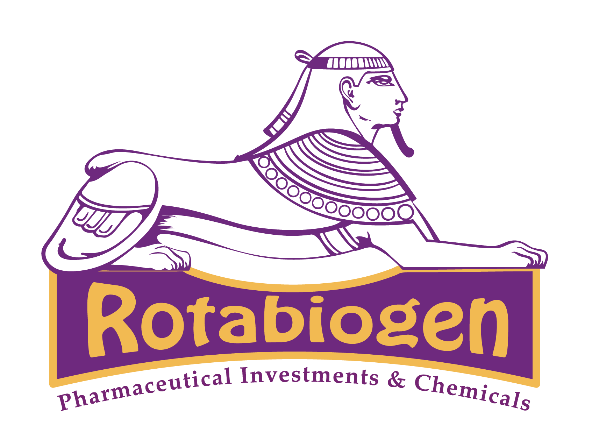

مشاريع التطوير والتحسينات الفنية لبيئة الشبكة وأنظمة تكنولوجيا المعلومات خلال العام الأول من التعيين Development projects and technical improvements for the network environment and IT systems during the first year of appointment
تم التعامل مع بيئة تقنية تفتقر إلى التوثيق الكافي، وتعاني من تحديات فنية وتشغيلية مؤثرة سلباً على استقرار البنية التحتية للشبكة والخوادم، مما كان يعرض استمرارية الأعمال لمخاطر متكررة. Dealt with a technical environment lacking sufficient documentation, suffering from technical and operational challenges negatively affecting the stability of the network and server infrastructure, exposing business continuity to recurring risks.
بناء قاعدة معرفية موثقة ساهمت في تسهيل الإدارة واتخاذ القرارات الفنية وتنفيذ أعمال التطوير اللاحقة.Built a documented knowledge base that facilitated management, technical decision-making, and subsequent development work.
حل مشكلات الفلترة، استقرار اتصال SAP، تحسين خدمات الـ VPN، ورفع مستوى الأمان العام.Resolved filtering issues, stabilized SAP connection, improved VPN services, and elevated overall security.
القضاء على العشوائية، تقليل المشكلات التشغيلية، وتحسين إدارة الشبكة والأمان وسهولة التوسع.Eliminated randomness, reduced operational issues, improved network management, security, and scalability.
معالجة الانقطاعات المتكررة، تحسين استقرار الإنترنت، وتقليل تأثير الضغط المرتفع.Resolved frequent outages, improved internet stability, and reduced the impact of high traffic loads.
رفع مستوى الاعتمادية، حماية البيانات، وتحسين إدارة الخوادم بشكل عام.Elevated reliability, protected data, and improved general server management.
زيادة سرعة الوصول للملفات، وتحسين الاستقرار والاعتمادية بشكل ملحوظ.Increased file access speed, and noticeably improved stability and reliability.
تعزيز استمرارية الخدمات، وتقليل مخاطر التوقف عند حدوث أي عطل بالخادم الرئيسي.Enhanced service continuity and reduced downtime risks in case of primary server failure.
تحسين إدارة الشبكة اللاسلكية، ومتابعة الأداء والأعطال بشكل مركزي.Improved wireless network management and centralized performance and fault monitoring.
حماية السيرفرات من الإغلاق المفاجئ، ضمان استمرارية التشغيل، وتقليل مخاطر الأعطال الناتجة عن ارتفاع الحرارة.Protected servers from sudden shutdowns, ensured operational continuity, and reduced risks of heat-related failures.
نتيجة للأعمال المنجزة، تم رفع مستوى الاستقرار والأمان والكفاءة التشغيلية للبنية التحتية بشكل ملحوظ. ومع ذلك، ما زال التطوير قائماً للوصول إلى أفضل بيئة إنتاجية تدعم نمو الأعمال وتلبي متطلباتها التشغيلية المتغيرة بأعلى معايير الجودة والاعتمادية. As a result of the completed work, the stability, security, and operational efficiency of the infrastructure have significantly improved. However, development is still ongoing to reach the best production environment that supports business growth and meets its changing operational requirements with the highest standards of quality and reliability.
تحسينات مستمرة في أداء الشبكة وحمايتها لضمان بيئة عمل آمنة ومستقرة ضد التهديدات المتغيرة.Continuous improvements in network performance and protection to ensure a safe and stable environment against evolving threats.
مراقبة وتحسين أداء خطوط الإنترنت والـ Load Balancer لضمان توزيع الأحمال بكفاءة ومنع الانقطاعات.Monitoring and improving internet lines and Load Balancer performance to ensure efficient load distribution and prevent outages.
تطبيق تحديثات أكثر حماية وأداء أعلى على الفايروول Sophos لمواكبة أحدث تقنيات الحماية والفلترة.Applying more secure and higher performance updates to the Sophos firewall to keep up with the latest protection and filtering technologies.